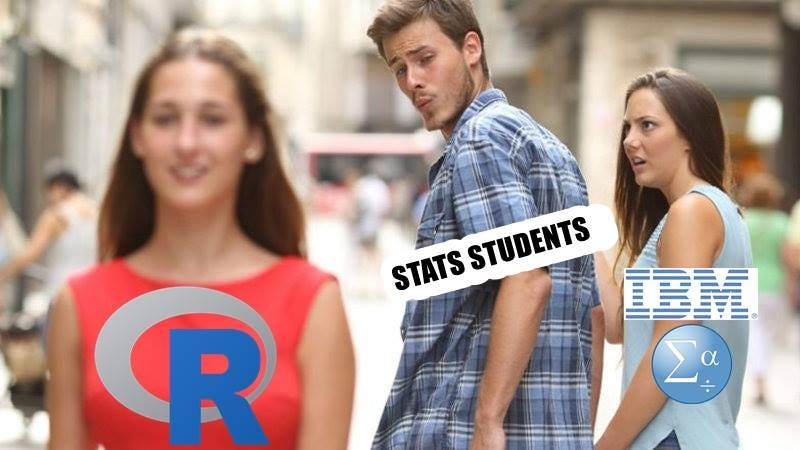

Chapter 2 Introduction
This guidebook will walk you through all of the steps necessary to complete your term assignment. Get ready, because you are embarking on a journey… from the safe GUI point-and-click world of SPSS to the code-based Thunderdome of R.
Where we’re going…

2.1 Goals
The goal of the assignment is twofold: First, to give you the opportunity to flex what you are learning in class, and two, to introduce you R Statistical Software; a game-changer in any future research endeavors.
This guide is meant as a companion to your assignment. It is not meant to be an in depth course on R, as that would be several entire courses on its own, but by the end you will have had a small taste of R and its capabilities. And who knows, it might ignite a spark of curiosity that jump starts a desire to learn more.
By the end of this assignment, you will have read a bunch of interesting research papers, designed a mini study based on a theory of your choice and completed some analyses and a full write up in R that you will hand in. Your paper will include everything a person would need to reproduce your experiment from start to finish. Don’t worry about HOW we’ll do this yet, just know that you will.
2.2 What can R do?
Disclaimer: I do NOT work for R. I just love it.
- Advanced statistical analyses without paying for packages (it’s open source!)
- The best data visualization capabilities of ANY statistical software
- Reproducible research is made easy, an integral partner of Open Science research
- Thousands of free online resources to learn anything you don’t know
- Did I say its open source.. ?
- Make gorgeous publication-ready papers and books with inline analyses
- Make gorgeous slideshows with analyses and text all in one document
- Make gorgeous websites (This website you’re reading is made 100% in R)
- Juice up your resume (researchers with R skills are a HUGE asset and hard to come by)
- Help you understand data better because the analysis isn’t happening behind a graphic user interface
- Ramp up your street cred 1000%.
